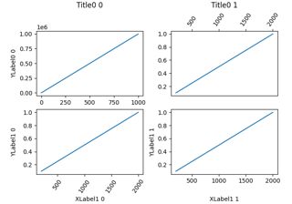
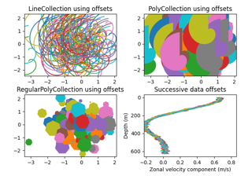
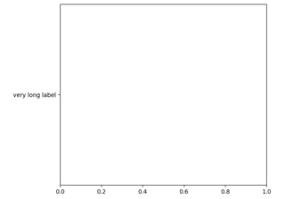
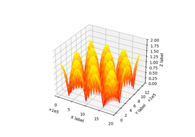

matplotlib.axes.Axes.set_ylabel#
- Axes.set_ylabel(ylabel, fontdict=None, labelpad=None, *, loc=None, **kwargs)[source]#
Set the label for the y-axis.
- Parameters:
- ylabelstr
The label text.
- labelpadfloat, default:
rcParams["axes.labelpad"](default:4.0) Spacing in points from the Axes bounding box including ticks and tick labels. If None, the previous value is left as is.
- loc{'bottom', 'center', 'top'}, default:
rcParams["yaxis.labellocation"](default:'center') The label position. This is a high-level alternative for passing parameters y and horizontalalignment.
- Other Parameters:
Examples using matplotlib.axes.Axes.set_ylabel#



Align labels and titles



Line, Poly and RegularPoly Collection with autoscaling
Line, Poly and RegularPoly Collection with autoscaling



Make room for ylabel using axes_grid
Make room for ylabel using axes_grid



Automatic text offsetting